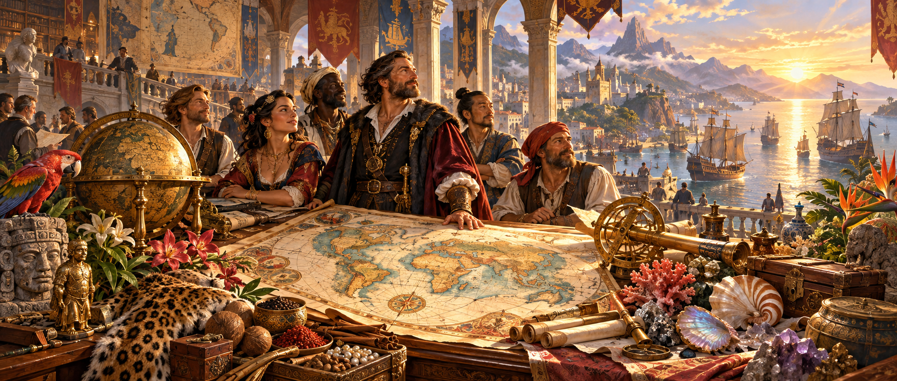
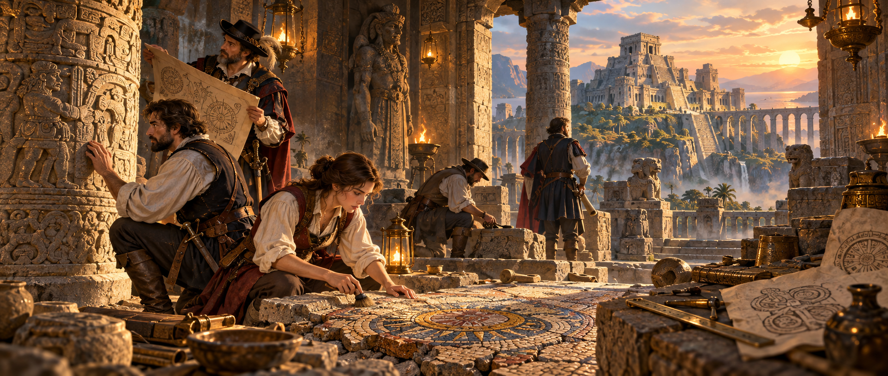
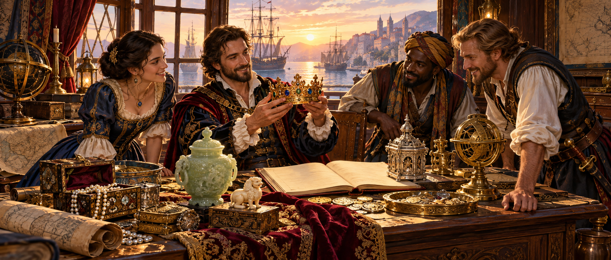
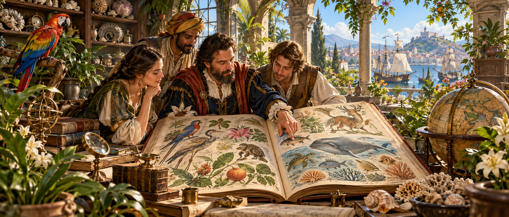
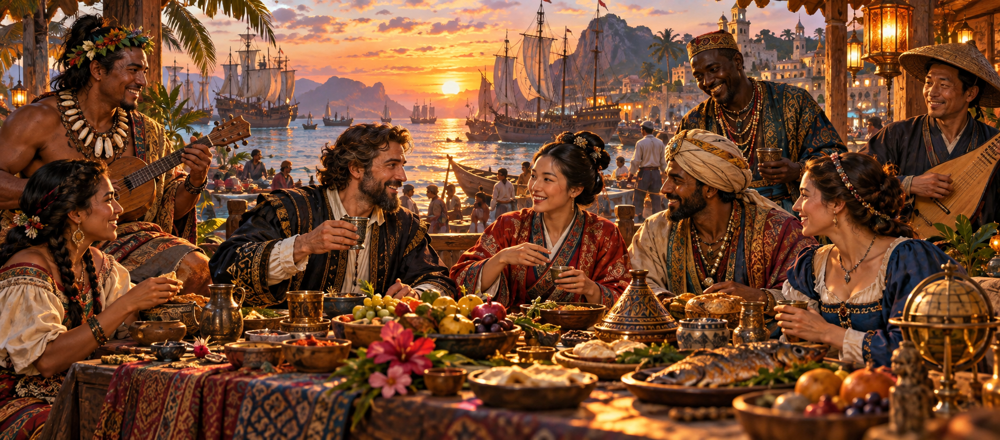
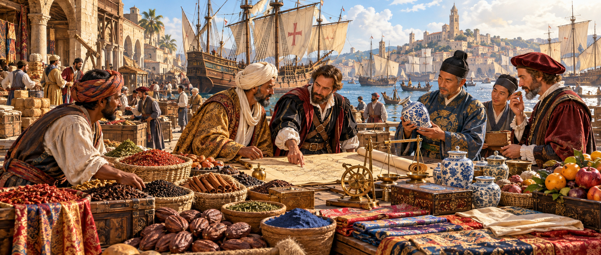
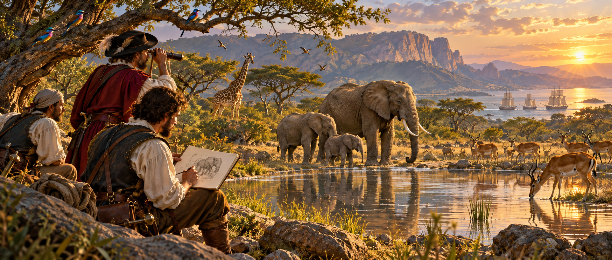
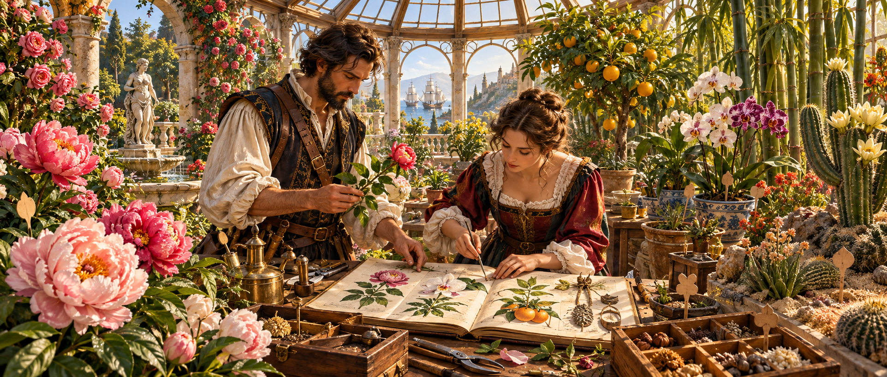
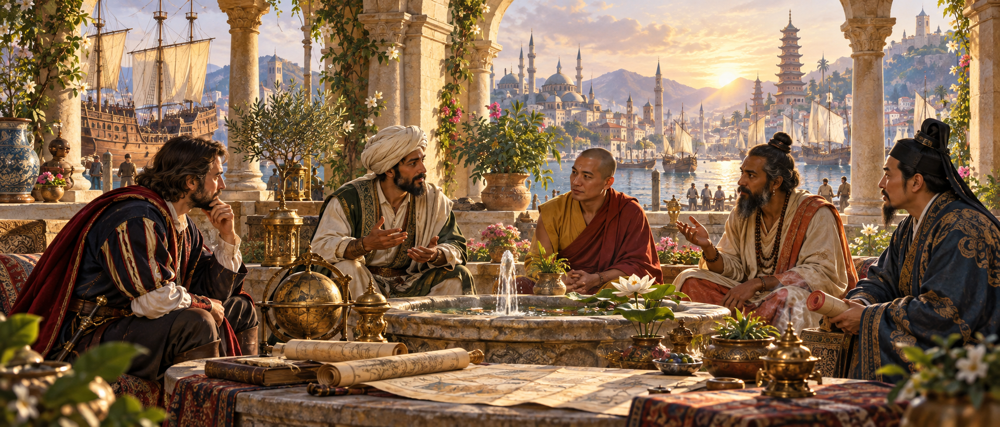

세계 발견 대백과 · 완성 업적

전체 발견물
세계를 다 읽은 자complete_all
지리
해도의 마지막 여백complete_geo
자연
대지가 들려준 모든 이야기complete_nature

유적
돌에 새긴 시간의 끝complete_ruin

보물
보물보다 빛나는 항해complete_treasure

생물 전체
생명의 대백과complete_creature

민족·풍속
세상 모든 이웃의 벗complete_people

교역품
온 세상을 잇는 항로complete_trade

동물
만 가지 숨결의 기록complete_animal

식물
사계절을 품은 정원complete_plant
전설·미신
전설 너머까지 닿은 자complete_myth

종교
모든 기도에 귀 기울이다complete_faith
미술품
아름다움의 모든 이름complete_art